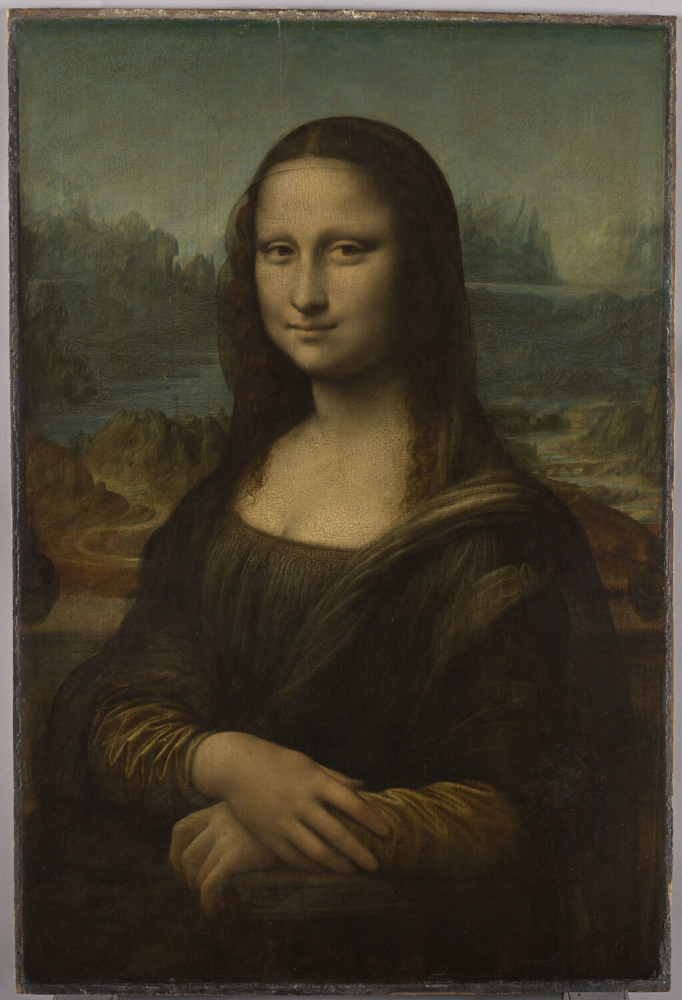
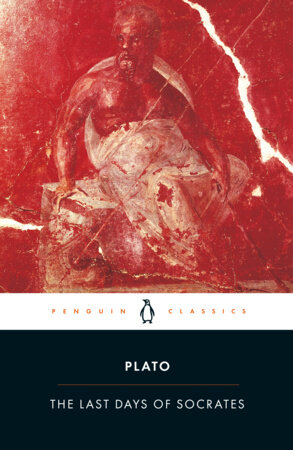
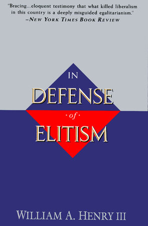
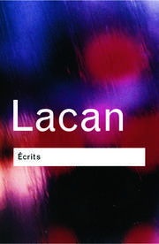
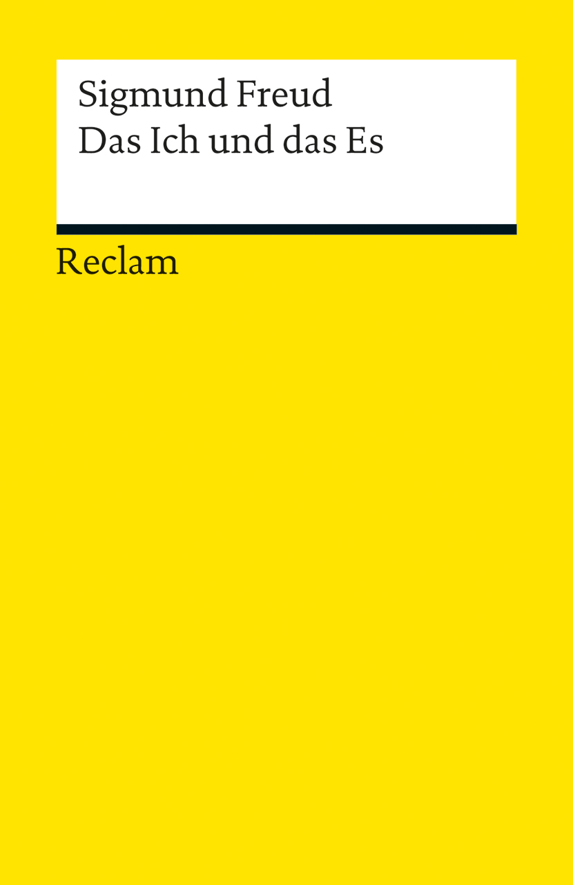
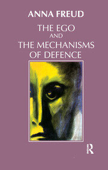

1:35:48 · 21 OPERE
Da dove proviene la fragilità dell'individuo contemporaneo?
Il filo del discorso
Il contributo parte da una domanda che il relatore dichiara di non voler chiudere con una risposta definitiva: da dove nasce la fragilità dell’individuo contemporaneo? Fragilità non significa qui sensibilità emotiva, ma perdita della capacità di giudicare e di agire autonomamente. L’obbedienza viene descritta come rinuncia alla propria coscienza; paura e discorsi contrapposti ridurrebbero il cittadino a scegliere fra appartenenze già predisposte. Sono tesi politiche del relatore, non una definizione clinica né una misura sperimentale della personalità di chi aderisce a una scelta pubblica. La prima immagine discussa è una fotografia pubblicitaria di una persona con un dispositivo tecnologico davanti agli occhi. Attraverso il paragone con Tempi moderni di Chaplin, il relatore denuncia il lavoro che trasforma il corpo in componente di un apparato. Legge lo sguardo della persona come disperato e il sorriso come forzato: interpretazioni della fotografia, che non consentono di conoscere il suo stato mentale, le condizioni effettive di quel lavoro o l’uso concreto del dispositivo. Il successivo riferimento a psicofarmaci, dipendenze e suicidi cerca indizi di una crisi sociale; questi fenomeni hanno però cause molteplici e non provano da soli un unico progetto di distruzione dell’individuo. Il confronto prende poi forma nella lettura di una pagina di The Psychology of Nationalism di Joshua Searle-White, identificabile dalla sequenza del testo sulla fragilità dell’identità. Il relatore contesta che la vulnerabilità sia presentata come carattere generale della condizione umana, preferendo ricondurre la fragilità contemporanea a condizioni culturali e sociali. Critica anche l’elenco dei risultati dell’umanità, sostenendo che arte e pensiero dovrebbero precedere dighe e ponti. Gli attacchi personali all’autore appartengono alla polemica; non sono valutazioni della scheda. Nel passo letto il sé è detto parzialmente definito dalle relazioni: questo non equivale a sostenere che una persona sia interamente riducibile alla società. La pagina originale contiene inoltre un rinvio al capitolo precedente e note, perciò l’accusa di assenza di qualsiasi sostegno non può essere ricavata dalla sola lettura isolata. Il tema della vulnerabilità fisica apre una digressione su morte, salute e cura. Samarcanda e Socrate servono per interrogare la paura dell’inevitabile; Gadamer per richiamare una visione della salute più ampia del solo dato tecnico. Il relatore descrive la malattia come processo che può anche portare al ristabilimento, ma precisa poi che l’esito può essere drammatico. Questa considerazione filosofica non rende vera la frase generale che malattia e morte non siano correlate. Un infarto è una condizione medica grave, distinta dall’arresto cardiaco, e non implica necessariamente una morte inevitabile. Anche il discorso sulla febbre non autorizza a considerare ogni intervento per ridurla un’azione contro l’organismo; il contributo non fornisce una regola terapeutica da seguire. Un secondo bersaglio è una pagina sui finanziamenti della fondazione Gates. Il relatore interpreta l’esclusione di sovvenzioni dirette agli individui come svalutazione della creatività personale, immaginando il rifiuto di un Einstein o di un Leibniz. Sono esempi controfattuali: una regola sull’ente beneficiario non afferma che le idee possano provenire soltanto da gruppi, né dimostra che le organizzazioni impediscano ogni contributo individuale. La politica oggi disponibile ammette inoltre eccezioni per alcuni programmi, e non va proiettata integralmente sulla pagina mostrata allora. I richiami a Schweitzer, Keynes e In Defense of Elitism sostengono la difesa di una minoranza capace di ragionare contro il conformismo. La proposizione che soltanto pochi pensino e che nessuna società abbia mai ascoltato la ragione rimane una generalizzazione del relatore, non una legge di natura provata. La proposta educativa consiste nell’esercitare l’argomentazione, la dimostrazione e la confutazione. L’aneddoto di un inventore del moto perpetuo e l’esempio della caduta dei gravi illustrano la necessità di chiedere prove e di rendere esplicite le condizioni di un modello. Il paragone fra chi crede alla Terra piatta e chi ne accetta la forma senza saperla dimostrare riguarda la qualità del proprio percorso di conoscenza; non rende equivalenti le prove delle due affermazioni. Nell’educazione medievale la retorica appartiene al trivio, non al quadrivio. La parte più ampia della seconda metà usa Lacan e Freud per ragionare sulla costruzione della personalità. Il relatore avverte di servirsi dello stadio dello specchio per un discorso proprio, senza esporre integralmente Lacan. Passa poi alla fase orale, alla fiducia nelle figure che nutrono il bambino e alla metafora di uno Stato che ne prenderebbe il posto. La trasformazione dell’adesione politica in regressione infantile è una sua interpretazione; non costituisce una diagnosi dei cittadini. La vista neonatale è ancora immatura, ma un neonato può già percepire forme e volti vicini: non è privo di visione per mesi. Io, Es, Super-io e meccanismi di difesa vengono presentati come strumenti per comprendere conflitti, ideali e senso di colpa. Sono modelli storici della psicoanalisi, distinti dalla localizzazione di organi nel cervello o da una prova biologica della manipolazione. Nel testo freudiano l’Io non coincide semplicemente con tutta la coscienza, né l’inconscio con le sole funzioni automatiche del corpo. L’analogia con Platone evidenzia una somiglianza di struttura, senza dimostrare identità fra le teorie. La conclusione torna ai classici. Il primo stasimo dell’Antigone apre la riflessione sulla potenza umana, capace di meraviglia e distruzione; l’Iliade e la Genesi introducono forza e scelta. Il richiamo alla libertà religiosa non risolve da solo ogni problema giuridico delle restrizioni pubbliche. Howard viene infine distinta da Harvard: chiudere un dipartimento non equivale alla scomparsa di tutti i corsi classici. Una casa semplice mostrata in un giardino di Winterthur diventa l’ultima immagine della conferenza: il relatore vi vede una dimensione umana trasformata in oggetto da museo, mentre ciò che ritiene innaturale domina il paesaggio quotidiano. Il richiamo al pensiero e alla scelta lascia aperta la domanda iniziale, senza farne una spiegazione clinica universale.
I libri nel discorso

1984
Identificazione probabile
Copertina: Newton Compton · edizione illustrativa
riconoscimento_vocale_locale
Passaggio 3:20 ↗ · Fonti e libro ↗
Tempi moderni (Modern Times)
Immagine ufficiale di Tempi moderni: Film del 1936 scritto, diretto, prodotto e interpretato da Charles Chaplin, con Paulette Goddard. Immagine ufficiale di catalogo.
Fotografia in bianco e nero fornita dal sito Chaplin: Charlot e un altro operaio fra gli ingranaggi. Non è una copertina di libro né una locandina con testo. La prima miniatura di 80 × 80 pixel è stata respinta e sostituita con il file principale di 450 × 600.
riconoscimento_vocale_locale
Passaggio 7:28 ↗ · Fonti e libro ↗The Psychology of Nationalism
Identificazione probabile
Copertina: Palgrave Macmillan, opera © 2001, eBook ISBN 9780312299057; metadati correnti per edizioni a stampa 8 febbraio 2002
Copertina autentica fornita da Springer: titolo, autore Joshua Searle-White e sagoma umana leggibili. Immagine dell’intero libro che contiene il capitolo letto, non copertina autonoma di The Fragility of Identity; edizione della copia nel video non identificata.
riconoscimento_vocale_locale
Passaggio 12:39 ↗ · Fonti e libro ↗
La Gioconda (La Joconde / Mona Lisa)
Copertina: Riproduzione del dipinto, olio su tavola di pioppo, 1503–1519, Louvre INV 779 / MR 316
Fotografia autentica dell’opera intera senza cornice, fornita dal catalogo Louvre: © 2018 GrandPalaisRmn (musée du Louvre) / Michel Urtado. Riproduzione del dipinto, non copertina libraria, ritratto generico o dettaglio ricostruito.
riconoscimento_vocale_locale
Passaggio 17:43 ↗ · Fonti e libro ↗
Samarcanda
Copertina dell’album che contiene il brano: Canzone inclusa nell’album omonimo Philips del 1977. Immagine dell’album dal sito ufficiale dell’artista, non copertina di un libro o prova di uno specifico singolo posseduto dal relatore.
La scheda riguarda la canzone Samarcanda; l’immagine è dichiarata copertina dell’album omonimo. Non si trascrivono versi né si identifica una origine unica della leggenda senza riscontro.
riconoscimento_vocale_locale
Passaggio 19:20 ↗ · Fonti e libro ↗
Fedone (Phaedo)
Identificazione probabile
Copertina della raccolta The Last Days of Socrates,contenente il Fedone: Copertina della raccolta The Last Days of Socrates,Penguin Classics,29aprile2003,304pagine,traduzione di Hugh Tredennick e Harold Tarrant,a cura di Tarrant. Comprende Eutifrone,Apologia,Critone e Fedone: non è una edizione autonoma del solo Fedone.
Raccolta dichiarata di quattro dialoghi,non volume autonomo delFedone. La traduzionePerseusHaroldNorthFowler è una altra fonte e non viene attribuita alla copertinaPenguin.
riconoscimento_vocale_locale
Passaggio 19:27 ↗ · Fonti e libro ↗
Dove si nasconde la salute
Copertina: Raffaello Cortina, gennaio 1994, 208 pagine, ISBN 9788870782899. Originale tedesco Über die Verborgenheit der Gesundheit, 1993; il titolo inglese The Enigma of Health spiega la variante pronunciata, senza farne un distinto libro italiano.
Copertina autentica Cortina vista integralmente: fondo grigio, Hans-Georg Gadamer e Dove si nasconde la salute in alto, figura della Venere botticelliana in basso a destra, marchio editoriale sul lato sinistro.
riconoscimento_vocale_locale
Passaggio 21:04 ↗ · Fonti e libro ↗
Gli elementi
Identificazione probabile
Copertina: Bompiani · Tutte le opere, raccolta contenente Gli elementi
La copertina illustra la raccolta Tutte le opere, che include Gli elementi; non è attribuita al video.
riconoscimento_vocale_locale
Passaggio 33:26 ↗ · Fonti e libro ↗
Filosofia della civiltà (The Philosophy of Civilization / Kulturphilosophie)
Identificazione probabile
Copertina della raccolta completa The Philosophy of Civilization: Prometheus · The Philosophy of Civilization · 1987 · ISBN9780879754037
Riutilizzata la copertina autentica dell’intera raccolta Prometheus già associata ai suoi due saggi nel repertorio. Non è la copertina della sola parte; non è la copertina Fazi e non identifica la specifica copia italiana citata. La raccolta è un contenitore editoriale, non una terza opera autonoma di Schweitzer distinta dai due testi.
riconoscimento_vocale_locale
Passaggio 38:34 ↗ · Fonti e libro ↗
Le conseguenze economiche della pace
Identificazione probabile
Copertina: Adelphi · L’oceano delle storie · 2007 · traduzione di Franco Salvatorelli
Immagine autentica dell’opera, controllata visivamente; l’edizione di riferimento non è attribuita al filmato.
riconoscimento_vocale_locale
Passaggio 39:10 ↗ · Fonti e libro ↗
In Defense of Elitism
Identificazione probabile
Copertina: Anchor, paperback 1 agosto 1995, ISBN 9780385479431; prima edizione Doubleday 1994
Copertina autentica fornita dall’editore: titolo e William A. Henry III leggibili, triangoli rosso/blu. Edizione paperback della medesima opera, non copertina della prima edizione Doubleday, né edizione identificata nel parlato.
riconoscimento_vocale_locale
Passaggio 41:22 ↗ · Fonti e libro ↗
Lo stadio dello specchio come formatore della funzione dell’Io (Le stade du miroir comme formateur de la fonction du Je)
Copertina: Routledge Classics, Écrits: A Selection, 2001, ISBN 9780415255462, traduzione Alan Sheridan
Copertina autentica di una selezione inglese degli Écrits, che l’indice dell’editore attesta contenere The Mirror Stage come primo saggio. Titolo di raccolta e Lacan visibili. Non copertina autonoma dell’estratto francese 1949 e non l’intera raccolta francese; edizione utilizzata dal relatore non identificata.
riconoscimento_vocale_locale
Passaggio 55:21 ↗ · Fonti e libro ↗Le mille e una notte (Alf layla wa-layla / Arabian Nights)
Copertina: The Arabian Nights, Volume I: The Marvels and Wonders of The Thousand and One Nights, Signet 3 luglio 2007, ISBN 9780451530592
Copertina autentica del solo volume I, non dei volumi completi: traduzione Sir Richard Francis Burton, adattamento Jack Zipes, introduzione Daniel Beaumont. Editore dichiara inclusa la storia di Ali Baba. Immagine di raccolta/edizione contenente, non una copertina araba medievale né l’edizione del relatore; varianti del corpus distinte.
riconoscimento_vocale_locale
Passaggio 59:02 ↗ · Fonti e libro ↗
L’Io e l’Es (Das Ich und das Es)
Identificazione probabile
Copertina: Reclam Universal-Bibliothek 18954, a cura di Lothar Bayer, 7 novembre 2013, 104 pagine, ISBN 9783150189542
Copertina autentica Reclam gialla, con Sigmund Freud e titolo tedesco leggibili. Edizione commentata dello stesso saggio, non primo frontespizio 1923 e non una raccolta di altre opere. La copia concreta nel video non è identificata.
riconoscimento_vocale_locale
Passaggio 1:06:47 ↗ · Fonti e libro ↗Lo strano caso del dottor Jekyll e del signor Hyde
Copertina: BUR / Rizzoli · 2021
Immagine autentica dell’opera, controllata visivamente; l’edizione di riferimento non è attribuita al filmato.
riconoscimento_vocale_locale
Passaggio 1:12:44 ↗ · Fonti e libro ↗
L’Io e i meccanismi di difesa (Das Ich und die Abwehrmechanismen)
Copertina: Edizione inglese con prefazione 1966, ISBN 9781855750388, distribuzione Routledge, 204 pagine
Copertina autentica fornita da Routledge: Anna Freud e The Ego and the Mechanisms of Defence leggibili, faccia in giallo/verde. Traduzione della stessa opera con apparato 1966, distinta dall’edizione originale tedesca 1936; tiratura concreta non certificata e non identificata nel video.
riconoscimento_vocale_locale
Passaggio 1:13:50 ↗ · Fonti e libro ↗
Timeo
Identificazione probabile
Copertina: Copertina ufficiale Bompiani, Testi a fronte, a cura di Giovanni Reale, 2000, ISBN 9788845290268: autore e titolo leggibili su campiture azzurre e bianche.
Immagine autentica dell’opera, controllata visivamente; l’edizione di riferimento non è attribuita al filmato.
riconoscimento_vocale_locale
Passaggio 1:21:37 ↗ · Fonti e libro ↗
Antigone
Copertina: Einaudi · Collezione di teatro · edizione di riferimento
Immagine associata all’ISBN di riferimento e controllata visivamente; edizione e traduzione non identificate come quelle citate o lette nel video.
riconoscimento_vocale_locale
Passaggio 1:26:34 ↗ · Fonti e libro ↗
Iliade
Copertina: Einaudi · ET Classici · 2014
Copertina autentica dell’edizione di riferimento, controllata visivamente. Non identifica l’esemplare letto o citato nel video.
riconoscimento_vocale_locale
Passaggio 1:29:34 ↗ · Fonti e libro ↗
Genesi
Copertina: Einaudi, I libri della Bibbia / Einaudi Tascabili, 2000; introduzione di Steven Rose
Copertina dell’edizione autonoma Genesi, nella serie I libri della Bibbia, con introduzione di Steven Rose. Edizione scelta come riferimento iconografico; nessuna edizione è confermata nel video.
riconoscimento_vocale_locale
Passaggio 1:30:36 ↗ · Fonti e libro ↗
Pensieri
Identificazione probabile
Copertina: UTET · a cura di Bruno Nacci · 2021
Copertina autentica dell’edizione di riferimento, non attribuita all’esemplare del video.
riconoscimento_vocale_locale
Passaggio 1:35:32 ↗ · Fonti e libro ↗Minutaggi ricavati da testi automatici, da riascoltare. Le identificazioni probabili sono segnalate accanto ai libri.